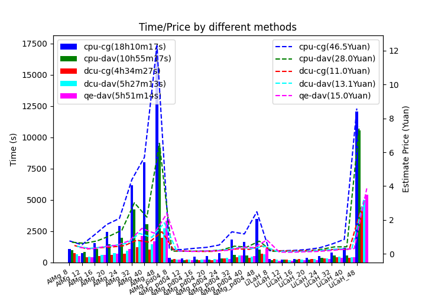
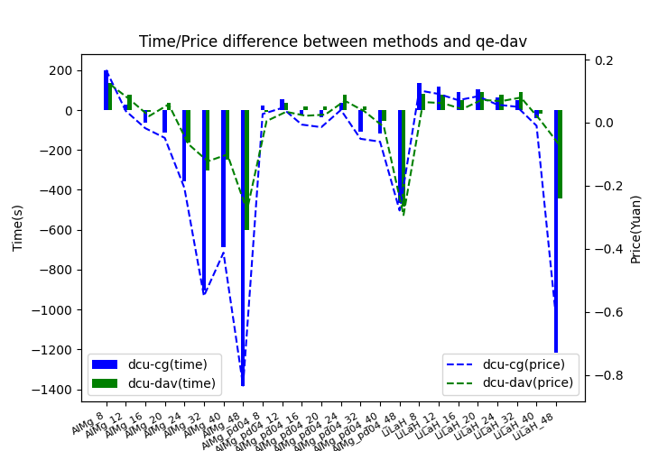
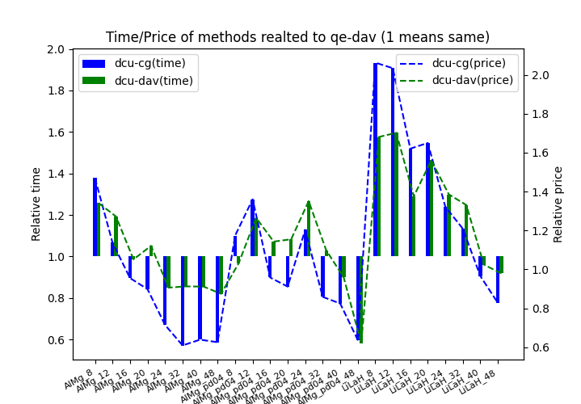

| Test_date | : | 2024-03-29 |
| Version | : | v3.6.0(a7c1865 (Thu Mar 28 09:05:39 2024 +0800)) |
| Job_address | : | link |
| Targets | : | ABACUS DCU device with CG method |
| Properties | : | energy/force/stress/virial/time |
1. Introduction
Label cpu-cg/cpu-dav/dcu-cg/dcu-dav is the ABACUS job calculated on CPU or DCU with ks_solver cg or dav. The CPU calculation is performed on Bohrium platform with c32_m128_cpu node, and DCU calculation is performed on Sugon platform with kshdnormal node (4DCU+32CPU). Same calculations on CPU with 'dav' method is also calculated by QE v7.0. For all calculations, symmetry is set to 0, ecutwfc is set to 100 Ry, ecutwfc is set to 1e-8, and kspacing is set to 0.08 1/Bohr (in QE, the K point numbers are same with that converting from kspacing). All calculations use pseudopotentials SG15_ONCV_v1.0_upf, and extra calculation with pd04 pseudopotential is used for the AlMg system, which has less valence electron number.
2. Result



Figure 1. The comparsion of total time and price by different ABACUS methods (cpu-cg/cpu-dav/dcu-cg/dcu-dav) and by QE. The price of cpu is 2.56 Yuan/Hour, and the price of DCU is 0.6*4=2.4 Yuan/hour. (left: time and price of different methods (the total time and price of all examples are listed in parentheses), middle: difference time and price between ABACUS methods and QE dav, right: related time and price of ABACUS methods to QE dav)